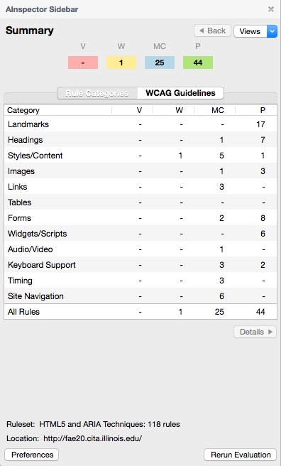

{% extends "base.html" %}
{% set title = "AInspector Sidebar" %}
{% set description = "Web accessibility evaluation tool for Firefox based on WCAG 2.0 and ARIA" %}
{% set home_page = true %}
{% block content %}
{% markdown %}
To install the latest version, `v{{ site.ainspector_version}}`, please visit the [**{{ site.mozilla_addons }} page**]({{ site.mozilla_url }}).
Important Note: Beginning with the Nov. 14, 2017 release of Firefox 57, AInspector Sidebar will no longer be compatible with that, or any later, version of Firefox.
It will still be possible to continue running AInspector Sidebar, but this will require installing an older version of Firefox. For more information, see the [Installation Guide](installation.html).

{% endmarkdown %}
{% endblock %}